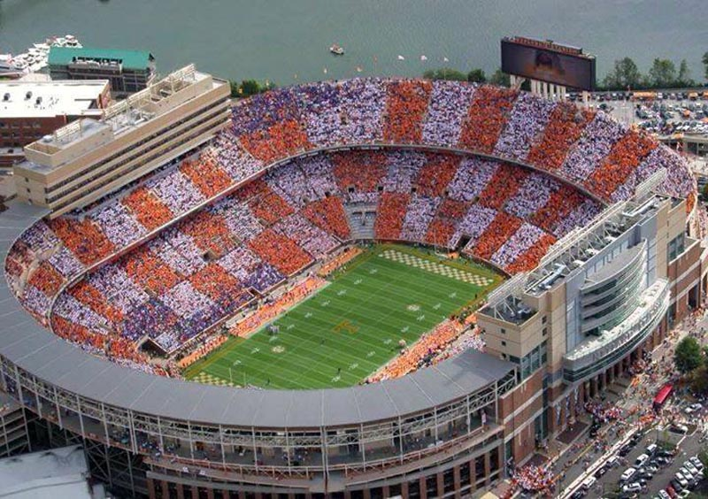

List of stadiums by capacity
The following is a list of notable sports stadiums, ordered by their capacity, which refers to the maximum number of spectators they can normally accommodate.
Notes:
- The capacity figures are standard, permanent total capacity, including both seating and any permanent standing areas, but excluding any temporary accommodation.
- Whenever possible, capacities are taken from the figure stated on the official website of the stadium, its tenants, or a sports event it has hosted.
- A stadium's record attendance is not considered relevant to its regular or official capacity; for records achieved during sports events in (among other venues) stadiums, see List of sporting venues with a highest attendance of 100,000 or more.
- Only stadiums with a capacity of 40,000 or more are included in this list.
- Stadiums that are defunct or closed, or those that no longer serve as competitive sports venues (such as Strahov Stadium, which was the largest in the world and holds around 220,000 spectators), are not included. They are listed under List of closed stadiums by capacity.
- An asterisk (*) indicates that the team plays only some (few) of its home matches at the venue, and may have another (primary) home ground.
- Race tracks (such as the Indianapolis Motor Speedway) are not included. For a list of all sports venues by capacity, see List of sports venues by capacity.
Rungrado 1st of May Stadium
| Capacity | City | Country | Use(s) |
|---|---|---|---|
| 114.000 | Pyongyang | North Korea | Association Football, athletics, mass games |
The Rungrado 1st of May Stadium is a multi-purpose stadium in Pyongyang, North Korea, completed on May 1, 1989. It is one of the largest stadiums in the world, with a total capacity of 114,000. The site occupies an area of 20.7 hectares (51 acres).
It is currently used for football matches, a few athletics events, but most often for Arirang Festival performances (also known as the Mass Games). The stadium can seat 114,000 which ranks it on the list of largest stadiums by capacity in the world.
Its name comes from Rungrado Islet in the Taedong River, upon which it is situated, and May Day, the international labour day. Its scalloped roof features 16 arches arranged in a ring, and it is said to resemble a magnolia blossom. It is not to be confused with the nearby 50,000 capacity Kim Il-sung Stadium.
It hosts events on a main pitch sprawling across over 22,500 m² (242,200 ft²). Its total floor space is over 207,000 m² (2.2 million ft²) across eight stories, and the lobes of its roof peak at more than 60 m (197 ft) from the ground.
While the stadium is used for sporting events, it is most famous as the site of massive performances and shows celebrating Kim Il-sung and the North Korean nation. In June–July 2002 it was the site of a large choreographed "Arirang Festival" gymnastic and artistic performance. The extravaganza involved for the first time some 100,000+ participants—double the number of spectators, and was open to foreigners. These performances are now an annual feature in Pyongyang, usually in August and September. The Guinness Book of Records has recognized these events as the largest in the world.
In the late 1990s, a number of North Korean army generals implicated in an assassination attempt on Kim Jong-il were executed via burning in the stadium.
Michigan Stadium
| Capacity | City | Country | Use(s) |
|---|---|---|---|
| 107,601 | Ann Arbor, Michigan | United States | American football |
Michigan Stadium, nicknamed "The Big House", is the football stadium for the University of Michigan in Ann Arbor, Michigan. It is the largest stadium in the United States, the second largest stadium in the world and the 34th largest sports venue. Its official capacity is 107,601, but it has hosted crowds in excess of 115,000
Michigan Stadium was built in 1927 at a cost of $950,000 (equivalent to $13.1 million in 2017) and had an original capacity of 72,000. Prior to the stadium's construction, the Wolverines played football at Ferry Field. Every home game since November 8, 1975 has drawn a crowd in excess of 100,000, an active streak of more than 200 contests. On September 7, 2013 the game between Michigan and the Notre Dame Fighting Irish attracted a crowd of 115,109, a record attendance for a college football game since 1927, and an NCAA single-game attendance record at the time,overtaking the 114,804 record set two years previously for the same match up.
Michigan Stadium was designed with footings to allow the stadium's capacity to be expanded beyond 100,000. Fielding Yost envisioned a day where 150,000 seats would be needed.To keep construction costs low at the time, the decision was made to build a smaller stadium than Yost envisioned but to include the footings for future expansion.
Michigan Stadium is used for the University of Michigan's main graduation ceremonies; Lyndon Johnson outlined his Great Society program at the 1964 commencement ceremonies in the stadium. It has also hosted hockey games including the 2014 NHL Winter Classic, a regular season NHL game between the Toronto Maple Leafs and the Detroit Red Wings with an official attendance of 105,491, a record for a hockey game. Additionally, a 2014 International Champions Cup soccer match between Real Madrid and Manchester United had an attendance of 109,318, a record crowd for a soccer match in the United States.
Beaver Stadium
| Capacity | City | Country | Use(s) |
|---|---|---|---|
| 106,572 | State College, Pennsylvania | United States | American football |
Beaver Stadium is an outdoor college football stadium in University Park, Pennsylvania, United States, on the campus of The Pennsylvania State University. It is home to the Penn State Nittany Lions of the Big Ten Conference since 1960, though some parts of the stadium date back to 1909. The stadium is named after James A. Beaver, a former governor of Pennsylvania (1887–91) and president of the university's board of trustees.
Beaver Stadium has an official seating capacity of 106,572, making it currently the second largest stadium in the Western Hemisphere and the third largest in the world.
Beaver Stadium is widely known as one of the toughest venues for opposing teams in collegiate athletics. In 2008, Beaver Stadium was recognized as having the best student section in the country for the second consecutive year In 2016, it was voted the number-one football stadium in college football in a USA Today poll, garnering over 41 percent of the vote
The stadium is the first to have its interior included in Google Street View.
The stadium has been expanded six times, reflecting Penn State's rise to national prominence under Joe Paterno—more than doubling in size in the process. Expansions in 1972 brought capacity to 57,538. Another expansion in 1976 increased capacity to 60,203. In 1978, 16,000 seats were added when the stadium was cut into sections and raised on hydraulic lifts, allowing the insertion of seating along the inner ring of the stadium where the track had previously been located, raising capacity to 76,639. In 1980, maximum capacity increased to 83,770. In 1985, walkways were added around the tops of the end zones and entry ramps at the stadium's corners resulted in lowering the capacity to 83,370. An expansion was completed for the 1991 football season, placing an upper deck addition over the north end zone and raising capacity to 93,967.
Ohio Stadium
| Capacity | City | Country | Use(s) |
|---|---|---|---|
| 104,944 | Columbus, Ohio | United States | American football |
Ohio Stadium, also known as the Horseshoe, "the Shoe", and "the House that Harley built", is an American football stadium in Columbus, Ohio, United States, on the campus of The Ohio State University. Its primary purpose is the home venue of the Ohio State Buckeyes football team and the Ohio State University Marching Band. From 1996 to 1998, Ohio Stadium was the home venue for the Columbus Crew of Major League Soccer prior to the opening of Columbus Crew Stadium in 1999. The stadium also was the home venue for the OSU track and field teams from 1923–2001. In addition to athletics, Ohio Stadium is also a concert venue, with U2, The Rolling Stones, Pink Floyd, and Metallica among the many acts to have played there, and also serves as the site for the university's Spring Commencement ceremonies each May. Permanent field lights were added in 2014.
The stadium opened in 1922 as a replacement for Ohio Field and had a seating capacity of 66,210. In 1923, a cinder running track was added that was later upgraded to an all-weather track. Seating capacity gradually increased over the years and reached a total of 91,470 possible spectators in 1991. Beginning in 2000, the stadium was renovated and expanded in several phases, removing the track and adding additional seating, which raised the capacity to 101,568 by 2001 and to 102,329 in 2007. In 2014, additional seating was added in the end zone, raising the official capacity to 104,944. It is the largest stadium by capacity in the state of Ohio, the third largest football stadium in the United States, and the fourth largest non-racing stadium in the world. Ohio Stadium was added to the National Register of Historic Places by the National Park Service on March 22, 1974.
Kyle Field
| Capacity | City | Country | Use(s) |
|---|---|---|---|
| 102,733 | College Station, Texas | United States | American football |
Kyle Field is the football stadium located on the campus of Texas A&M University in College Station, Texas. It has been the home to the Texas A&M Aggie football team in rudimentary form since 1904, and as a complete stadium since 1927. It is known as the "Home of the 12th Man". The seating capacity of 102,733 in 2015 makes the stadium the largest in the Southeastern Conference and the fourth largest stadium in the NCAA, fourth largest stadium in the United States, and the fifth largest non-racing stadium in the world. Within the state of Texas, Kyle Field has the largest regular seating capacity, while AT&T Stadium has a larger overall capacity.
Kyle Field's largest game attendance was 110,631 people when Texas A&M lost to the Ole Miss Rebels with the score of 20–35 on October 11, 2014. This was the largest football game attendance in the state of Texas and SEC history.
On May 1, 2013, the Texas A&M Board of Regents approved a $450 million rebuild of Kyle Field. The renovation would raise the official seating capacity to 102,512 people, making it the largest football stadium in Texas and the SEC (surpassing Neyland Stadium by 57 seats) and the fourth-largest football stadium in the country.
The renovation was done in two distinct phases geared around the football season, and began immediately after the conclusion of the final 2013 season game in November with the implosion of the student section side . The stadium renovation was complete by the beginning of the 2015 season. Per local media, KBTX, major milestones for the Kyle Field project were as follows, with construction sequenced and phased to allow the playing of regular home football games in the stadium for the 2013, 2014, and 2015 seasons. The renovation was completed ahead of schedule and under budget.
Neyland Stadium
| Capacity | City | Country | Use(s) |
|---|---|---|---|
| 102,455 | Knoxville, Tennessee | United States | American football |

Neyland Stadium (pronounced NEE-land) is a sports stadium in Knoxville, Tennessee, United States. It serves primarily as the home of the Tennessee Volunteers football team, but is also used to host large conventions and has been a site for several National Football League (NFL) exhibition games. The stadium's official capacity is 102,455. Constructed in 1921, and originally called Shields-Watkins Field (the playing surface is still called that today), the stadium has undergone 16 expansion projects, at one point reaching a capacity of 104,079 before being slightly reduced by alterations in the following decade. Neyland Stadium is the fifth largest stadium in the United States, the sixth largest stadium in the world, and the second largest stadium in the Southeastern Conference. The stadium is named for Robert Neyland, who served three stints as head football coach at Tennessee between 1926 and 1952.
Neyland Stadium is occasionally used for concerts, political rallies, and religious gatherings. One of Neyland Stadium's most notable non-sporting events took place in May 1970, when the stadium hosted the Billy Graham Crusade, with President Richard Nixon as a guest speaker. The event occurred just three weeks after the Kent State shootings, at the height of the anti-war movement, and several anti-war protestors were arrested for trying to disrupt the event.The Jacksons performed three concerts at Neyland Stadium in August 1984, during their Victory Tour. East Tennessee native, Kenny Chesney, performed in Neyland Stadium in June 2003.
Neyland Stadium has hosted several NFL exhibition games, most recently in 1995, when the Washington Redskins played the Houston Oilers. The Knox County Football Jamboree, a preseason event for local high school teams, was held annually at the stadium until 2013. The discontinuation of the Jamboree at Neyland Stadium was due in part to maintaining the condition of the field in the month prior to the beginning of college football.
Tiger Stadium
| Capacity | City | Country | Use(s) |
|---|---|---|---|
| 102,321 | Baton Rouge, Louisiana | United States | American football |
Tiger Stadium, popularly known as Death Valley, is an outdoor stadium located in Baton Rouge, Louisiana on the campus of Louisiana State University. It is the home stadium of the LSU Tigers football team. Prior to 1924, LSU played its home games at State Field, which was located on the old LSU campus in Downtown Baton Rouge.
Tiger Stadium opened with a capacity of 12,000 in 1924. Renovations and expansions have brought the stadium's current capacity to 102,321, making it the third largest stadium in the SEC, sixth largest stadium in the NCAA and the seventh largest stadium in the world. When filled to capacity, Tiger Stadium ranks as the fifth largest "city" by population in the state of Louisiana.
Tiger Stadium first opened its gates to fans in the fall of 1924 as LSU hosted Tulane in the season finale. Since the first game in Tiger Stadium, LSU has gone on to post a 354-138-18 (.716) mark in Death Valley. Moreover, Tiger Stadium is also known for night games, an idea that was first introduced in 1931 against Spring Hill (a 35-0 LSU victory). In 2006, LSU celebrated its 75th year of playing night football in Tiger Stadium. LSU has played the majority of its games at night and the Tigers have fared much better under the lights than during the day. Since 1960, LSU is 201–59–3 (.773) at night in Tiger Stadium compared to a 20–22–3 (.476) record during the day over that span. LSU lost its first Saturday night game since 2009 against Alabama on Saturday November 3, 2012.
Bryant–Denny Stadium
| Capacity | City | Country | Use(s) |
|---|---|---|---|
| 101,821 | Tuscaloosa, Alabama | United States | American football |

Bryant–Denny Stadium, located in Tuscaloosa, Alabama, United States, is the home stadium for the University of Alabama Crimson Tide football team. The stadium opened in 1929 and was originally named Denny Stadium in honor of George H. Denny, the school's president from 1912 to 1932. In 1975, the Alabama legislature added longtime football coach Paul "Bear" Bryant's name to the stadium. Bryant would coach the remaining seven seasons of his career in the stadium, making him one of the few collegiate coaches to have coached in an arena or stadium that is (partially) named for him.
It has a seating capacity of 101,821, and is the fourth largest stadium in the Southeastern Conference, the seventh largest stadium in the United States and the eighth largest stadium in the world.
Serving as a replacement for Denny Field, Denny Stadium opened on September 28, 1929, with 6,000 in attendance for a 55–0 victory over Mississippi College. It was officially dedicated the following week at Homecoming ceremonies against Ole Miss, a game the Crimson Tide would win 22–7. Originally, the stadium had a capacity of 12,000—the lower half of the current stadium's east grandstand. However, President Denny initially envisioned a full bowl stadium capable of seating 66,000 people.In 1937, the first expansion of the stadium added 6,000 seats along the east sideline to increase the capacity to 18,000. Further expansions in 1950, 1961, and 1966 raised capacity to 25,000, 43,000, and 60,000, respectively. A 10,000-seat upper deck was added in 1987–88 for a capacity of 70,123. During the construction, the Crimson Tide was forced to play its entire 1987 home schedule at Birmingham's Legion Field, 56 miles (90 km) from the Tuscaloosa campus.
Darrell K Royal–Texas Memorial Stadium
| Capacity | City | Country | Use(s) |
|---|---|---|---|
| 100,119 | Austin, Texas | United States | American football |

Darrell K Royal–Texas Memorial Stadium (formerly War Memorial Stadium, Memorial Stadium, and Texas Memorial Stadium), located in Austin, Texas, has been home to the University of Texas at Austin Longhorns football team since 1924. The stadium has delivered a great home field advantage with the team's home record through the 2015 season being 362–108–10 (76.5%). The current official stadium seating capacity of 100,119 makes the stadium the second largest stadium in the state of Texas (behind Kyle Field), the largest in the Big 12 Conference, the eighth largest stadium in the United States, and the ninth largest stadium in the world.
The DKR–Texas Memorial Stadium attendance record of 102,315 spectators was set on September 4, 2016, when unranked Texas played #10 The University of Notre Dame and won in double overtime, 50-47
The stadium has been expanded several times since its original opening. The University's most recent completed project was a $27 million expansion and renovation project to the south end zone facilities in August 2009. For the 2009 season, 4,525 permanent bleacher seats were constructed, which allowed the stadium to become the first football stadium in Texas capable of seating in excess of 100,000 people and brought the stadium to its current seating capacity. In May 2013, Regents for the University of Texas system approved a $62 million stadium improvement project. This project will improve and add athletic and academic facilities within the existing stadium structure, but it will not expand the current seating capacity. The timeline for this project's completion has not yet been revealed.
Melbourne Cricket Ground
| Capacity | City | Country | Use(s) |
|---|---|---|---|
| 100,024 | Melbourne | United States | American football |
The Melbourne Cricket Ground (MCG), also known simply as "The G",is an Australian sports stadium located in Yarra Park, Melbourne, Victoria, and is home to the Melbourne Cricket Club. It is the 10th-largest stadium in the world, the largest in Australia, the largest in the Southern Hemisphere, the largest cricket ground by capacity, and has the tallest light towers of any sporting venue. The MCG is within walking distance of the city centre and is served by the Richmond railway station, Richmond, and the Jolimont railway station, East Melbourne. It is part of the Melbourne Sports and Entertainment Precinct.
Since it was built in 1853, the MCG has been in a state of almost constant renewal. It served as the centrepiece stadium of the 1956 Summer Olympics, the 2006 Commonwealth Games and two Cricket World Cups: 1992 and 2015. It is also famous for its role in the development of international cricket; it was the venue for both the first Test match and the first One Day International, played between Australia and England in 1877 and 1971 respectively. The annual Boxing Day Test is one of the MCG's most popular events. Referred to as "the spiritual home of Australian rules football", it hosts AFL matches in the winter, with at least one game (though usually more) held there each round. The stadium fills to capacity for the AFL Grand Final.
Home to the National Sports Museum, the MCG has hosted other major sporting events, including International rules football matches between Australia and Ireland, international rugby union matches, State of Origin series (rugby league), FIFA World Cup qualifiers and international friendly matches. Concerts and other cultural events are also held at the venue.
Until the 1970s, more than 120,000 people sometimes crammed into the MCG—the record crowd standing at around 130,000 for a Billy Graham evangelistic crusade in 1959, followed by 121,696 for the 1970 VFL Grand Final. Grandstand redevelopments and occupational health and safety legislation have now limited the maximum seating capacity to approximately 95,000 with an additional 5000 standing room capacity, bringing the total capacity to 100,024.
The MCG is listed on the Victorian Heritage Register and was included on the Australian National Heritage List in 2005. Journalist Greg Baum called it "a shrine, a citadel, a landmark, a totem" that "symbolises Melbourne to the world".
Camp Nou
| Capacity | City | Country | Use(s) |
|---|---|---|---|
| 99,354 | Barcelona | Spain | Association Football |
Camp Nou (Catalan pronunciation: [kamˈnɔw], "new field", often incorrectly referred to as the "Nou Camp" in English) is a football stadium in Barcelona, Catalonia, Spain. It has been the home of FC Barcelona since its completion in 1957.
With a seating capacity of 99,354, it is the largest stadium in Spain by capacity. It is also the largest stadium in Europe and the third largest association football stadium in the world in terms of capacity. It has hosted numerous international matches at a senior level, including a 1982 FIFA World Cup semi-final match, two UEFA Champions League finals and the football competition at the 1992 Summer Olympics.
The construction of Camp Nou started on 28 March 1954 as Barcelona's previous stadium, Camp de Les Corts, had no room for expansion. Although originally planned to be called "Estadi del FC Barcelona", the more popular name "Camp Nou" was used. The June 1950 signing of László Kubala, regarded as one of Barcelona's greatest players, provided further impetus to the construction of a larger stadium.
The architects were Francesc Mitjans and Josep Soteras, with the collaboration of Lorenzo García-Barbón.
Soccer City
| Capacity | City | Country | Use(s) |
|---|---|---|---|
| 94,736 | Johannesburg | South Africa | Association Football |
First National Bank Stadium or simply FNB Stadium, also known as Soccer City and The Calabash, is a stadium located in Nasrec, bordering the Soweto area of Johannesburg, South Africa. The venue is managed by Stadium Management South Africa (SMSA)and is a home ground of Kaizer Chiefs F.C. in the South African Premier Soccer League as well as key fixtures for the South African national football team (Bafana Bafana).
It is located next to the South African Football Association headquarters (SAFA House) where both the FIFA offices and the Local Organising Committee for the 2010 FIFA World Cup were housed. Designed as the main association football stadium for the World Cup, the FNB Stadium became the largest stadium in Africa with a capacity of 94,736. However its maximum capacity during the 2010 FIFA World Cup was 84,490 due to reserved seating for the press and other VIPs. The stadium is also known by its nickname "The Calabash" due to its resemblance to the African pot or gourd.
It was the site of Nelson Mandela's first speech in Johannesburg after his release from prison in 1990, and served as the venue for a memorial service to him on 10 December 2013. It was also the site of Chris Hani's funeral. It was also the venue for the 2010 FIFA World Cup Final, which was played by the Netherlands and Spain. The World Cup closing ceremony on the day of the final saw the final public appearance of Mandela.
Los Angeles Memorial Coliseum
| Capacity | City | Country | Use(s) |
|---|---|---|---|
| 93,607 | Los Angeles | United States | American football |
The Los Angeles Memorial Coliseum is an American sports stadium located in the Exposition Park neighborhood of Los Angeles, California. The stadium serves as the home to the University of Southern California (USC) Trojans football team, and as the temporary home for the Los Angeles Rams of the National Football League (NFL). The Coliseum was home to the Rams from 1946 to 1979, when they moved to Anaheim Stadium in Anaheim, California, and is serving as their home stadium again until the completion of Los Angeles Stadium at Hollywood Park in Inglewood, California. The facility has a permanent seating capacity of 93,607 for USC football games, making it the largest football stadium in the Pac-12 Conference. For Rams games, capacity is at 80,000, giving it the fourth-largest capacity in the NFL.
The stadium is located in Exposition Park and across the street from USC. The Coliseum is jointly owned by the state of California, Los Angeles County, and the city of Los Angeles and managed and operated by the Auxiliary Services Department of the University of Southern California.From 1959 to 2016, the Los Angeles Memorial Sports Arena was located adjacent to the Coliseum; the Sports Arena was closed in March 2016 and demolished between August and October 2016. Banc of California Stadium, a soccer-specific stadium and future home of Major League Soccer expansion club Los Angeles FC, is currently under construction on the former Sports Arena site and is scheduled to open in March 2018.
The Coliseum is the first stadium to have hosted the Summer Olympic Games twice, in 1932 and 1984 and has been proposed to host the 2024 Summer Olympics. The stadium was the temporary home of the Los Angeles Dodgers of Major League Baseball from 1958 to 1961 and was the host venue for games 3, 4, and 5 of the 1959 World Series. It was the site of the First AFL-NFL World Championship Game, later called Super Bowl I, and Super Bowl VII. Additionally, it has served as a home field for a number of other teams, including the Los Angeles Raiders of the NFL, and UCLA Bruins football. It was declared a National Historic Landmark on July 27, 1984, the day before the opening ceremony of the 1984 Summer Olympics.
Sanford Stadium
| Capacity | City | Country | Use(s) |
|---|---|---|---|
| 92,746 | Athens, Georgia | United States | American football |
Sanford Stadium is the on-campus playing venue for football at the University of Georgia in Athens, Georgia, United States. The 92,746-seat stadium is the tenth-largest stadium in the NCAA. Architecturally, the stadium is known for its numerous expansions over the years that have been carefully planned to fit with the existing "look" of the stadium. Games played there are said to be played "Between the Hedges" due to the field being surrounded by privet hedges, which have been a part of the design of the stadium since it opened in 1929. The current hedges were planted in 1996 after the originals were taken out to accommodate soccer for the 1996 Summer Olympics.
The stadium is the 11th largest stadium in the United States and the 18th-largest such stadium in the world.
The stadium is named for Dr. Steadman Vincent Sanford, an early major force behind UGA athletics. Sanford arrived at the University of Georgia as an English instructor in 1903. He later became the faculty representative to the athletics committee and would eventually become president of the University and Chancellor of the entire University System of Georgia. In 1911, he moved the university's football venue from its first location, Herty Field, to a location at the center of campus which was named Sanford Field in his honor.
In those early years of football, Georgia played a series of controversial games against in-state rival Georgia Tech. Sanford Field was too small to accommodate the large crowds, forcing Georgia to travel to Tech's Grant Field in Atlanta every year. Sanford wanted Georgia to have a venue that would equal Tech's, and the "final straw" came in 1927 when UGA's undefeated (9–0) team traveled to Tech and lost 12–0. It was alleged that Tech watered the field all night to slow UGA's running backs. Afterwards, Sanford vowed to "build a stadium bigger than Tech," and play the game at Athens every other year.
Rose Bowl
| Capacity | City | Country | Use(s) |
|---|---|---|---|
| 92,542 | Pasadena, California | United States | American football |
The Rose Bowl is an outdoor athletic stadium in Pasadena, California, just outside Los Angeles. Built in 1922 among the San Gabriel Mountains in the Arroyo Seco of Los Angeles County, the stadium is recognized as a United States National Historic Landmark and a California Historic Civil Engineering landmark. At a modern capacity of an all-seated configuration at 88,500 the Rose Bowl is the 17th-largest stadium in the world, the 11th-largest stadium in the United States, and the 11th largest NCAA stadium.
One of the most famous stadiums in sporting history,the Rose Bowl is best known as an American football venue, specifically as the host of the annual Rose Bowl Game for which it is named. Since 1982, the stadium has also served as the home stadium of the UCLA Bruins football team. The stadium has also hosted five Super Bowl games, second most of any venue. The Rose Bowl is also a noted soccer venue, having hosted the 1994 FIFA World Cup Final, 1999 FIFA Women's World Cup Final, and the 1984 Olympic Gold Medal Match, as well as numerous CONCACAF and United States Soccer Federation matches.
The Rose Bowl and adjacent Brookside Golf and Country Club are owned by the City of Pasadena and managed by the Rose Bowl Operating Company, a non-profit organization whose board is selected by council members of the City of Pasadena. UCLA and the Pasadena Tournament of Roses also have one member on the company board.

Sources: Wikipedia, Google photos